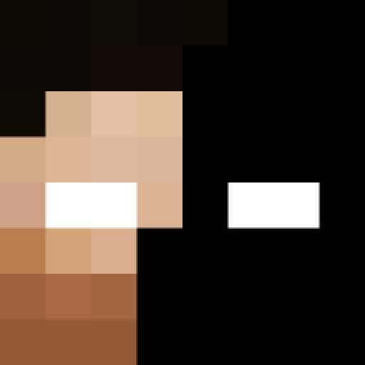
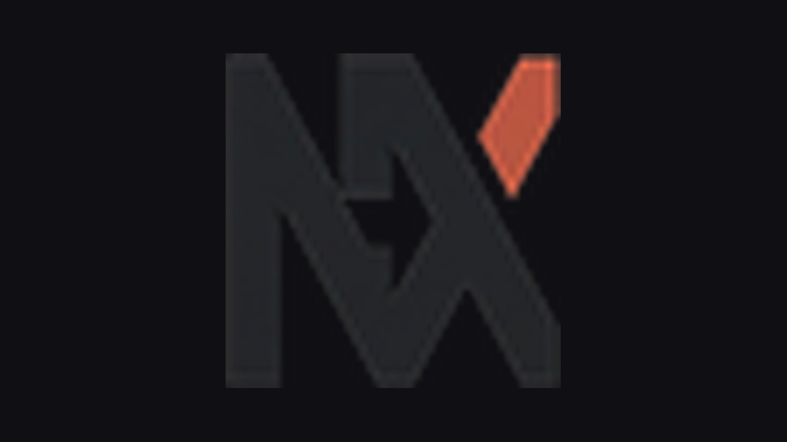
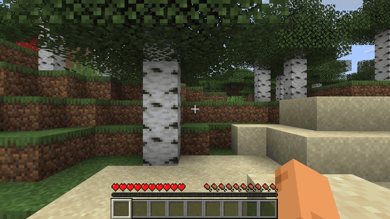
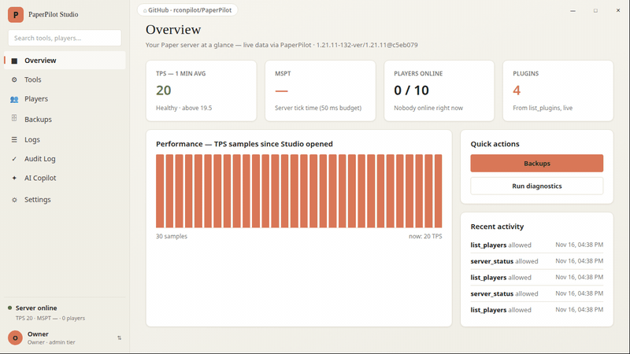
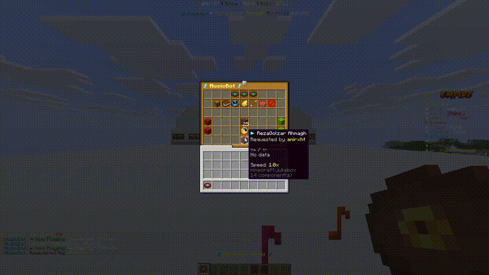

Minecraft developer & AI tooling builder — Paper plugins, custom model frameworks, and MCP servers that let AI agents create and run Minecraft content.
rconpilot.
Plugins and tools for Minecraft servers and AI workflows — real software, tested end-to-end, released in the open. No demos, no vaporware.
Featured projects
A phone-internet tunnel for your PC, a living market for survival servers, an AI copilot for Paper servers, a framework that turns custom models into interactive world objects, and a music player for voice-chat groups.

NexLink
Share your phone's internet — VPN included — with your PC over USB. A Rust engine and a virtual network adapter give the PC a real connection through the phone, PdaNet+-style — never a proxy.

LiveMarket
A Paper plugin that turns a server shop into a living market: prices move with real supply and demand, saturate against farming, and drift back to base over time. Chest GUI, price alerts, MySQL storage, MiniMessage throughout, PlaceholderAPI support.

PaperPilot + Studio
An MCP server that lets AI agents run a Paper server safely — tiered tools, a command allowlist and a full audit log — plus Studio, its native Windows app with a Fluent design and a copilot that drafts actions for your approval before running them.

ModelFramework
A framework built on BetterModel that turns custom models into interactive Minecraft blocks — animations, interactions and configurable requirements, all defined in YAML. Crates, furniture, machines, doors: if it has a model, it can live in the world.

MusicBot
A Spigot/Paper plugin that plays music through Simple Voice Chat groups — a Discord-style music bot, but inside Minecraft. Queue with skip, pause and resume, session volume control, and a BossBar now-playing display with progress.
More projects
Everything else lives on GitHub — Blockbench tooling and experiments.
Blockbench Models Toolkit
Tooling for Blockbench model workflows.
BlockBench AI Agent MCP
An MCP bridge that lets AI agents work inside Blockbench Desktop.
Activity
GitHub contributions over the last year — every square is a day of building.
Languages across all repos (generated files excluded): TypeScript 55.0% · JavaScript 18.3% · Java 12.0% · Rust 10.2% · Kotlin 1.5% · CSS 1.4% · HTML 0.8% · Python 0.6%
By the numbers
Small numbers, real software — everything below shipped and verified.